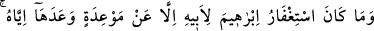
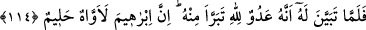

“Rabb’imden annemin kabrini ziyaret etmek hususunda izin istedim, bana izin verdi.
Onun için istiğfarda bulunma hususunda izin istedim, izin vermedi ve bana şu iki
âyeti (et-Tevbe, 113-114) indirdi.”[308]
Bazı âlimler, âyetlerin iniş sebebinin (sebeb-i nüzûl) birden fazla olmasında bir mâni
bulunmadığını, bu iki âyetin Peygamber Efendimiz’in hem annesi hem de amcası için
istiğfarda bulunması sebebiyle inmiş olabileceğini söylemişlerdir.
Fakir (Bursevî) der ki: Bu uzak bir görüştür. Çünkü eğer bu âyetler Peygamber
Efendimiz’in annesi için istiğfarda bulunması sebebiyle daha önce inmişse, amcasına
istiğfarda bulunmaya nasıl devam edebilir? Bilindiği gibi bu sûre-i kerîme (Tevbe
sûresi) Kur’an’ın en son inen sûrelerindendir. Aksi durum da (yani önce amcası, sonra
annesi için istiğfarda bulunması üzerine inmiş olması) aynı şekilde uzak bir ihtimaldir.
Öte yandan Hz. Peygamber’in annesi ve amcası için yaptığı iki istiğfarın farklı şeyler
olduğunu iddia eden kimsenin de iddiâsına delil getirmesi gerekir.
114. İbrâhim’in babası için mağfiret dilemesi, sadece ona verdiği bir sözden ötürü
idi. Fakat kendisine onun bir Allah düşmanı olduğu belli olunca ondan uzak durdu.
Gerçekten İbrahim çok içli (ah çeken) ve halîm idi.
“İbrâhim’in babası için mağfiret dilemesi…” Hz. İbrahim: Îman etmeye muvaffak
kılmak, ona hidayet ihsan etmek sûretiyle “Babamı da bağışla.” diye duâ ederek babası
için istiğfarda bulunmuştu. Nitekim “Çünkü o sapıklardandır.” (eş-Şuarâ, 26/86) sözü
de bunun gerekçesini açıklamıştır.
“sadece ona verdiği bir sözden ötürü idi.” Yani, Hz. İbrahim’in babası Âzer için
yapmış olduğu istiğfar, başka şeyden değil sadece İbrâhîm’in babasına verdiği bir
sözden kaynaklanıyordu. Babasının gerçek durumu henüz belli olmadığı için iman eder
ümidiyle İbrahim (a.s.): “Andolsun senin için mağfiret dileyeceğim.” (el-Mümtahine,
60/4), “Senin için Rabbimden mağfiret dileyeceğim.” (Meryem, 19/47) diyerek
babasına istiğfar sözü vermişti.
“Fakat kendisine” İbrâhim (a.s.)’a “onun bir Allah düşmanı olduğu” babasının
küfürde ısrarcı olduğu ve asla inanmayacağı vahyedilmek suretiyle “belli olunca ondan
uzak durdu.” onun için mağfiret talep etmekten kaçındı, tamamen vazgeçti.
‘Hz. İbrahim’in babasının bir Allah düşmanı olduğu küfür üzere ölmesiyle belli
olmuştur.’ da demişlerdir. Fakat birinci izah (vahiy yoluyla belli olması), âyette yer alan
“onun bir Allah düşmanı olduğu” sözüne daha uygun düşmektedir. Çünkü onun
düşmanlıkla nitelendirilmesi onda henüz ölüm halinin bulunmadığını gösterir.